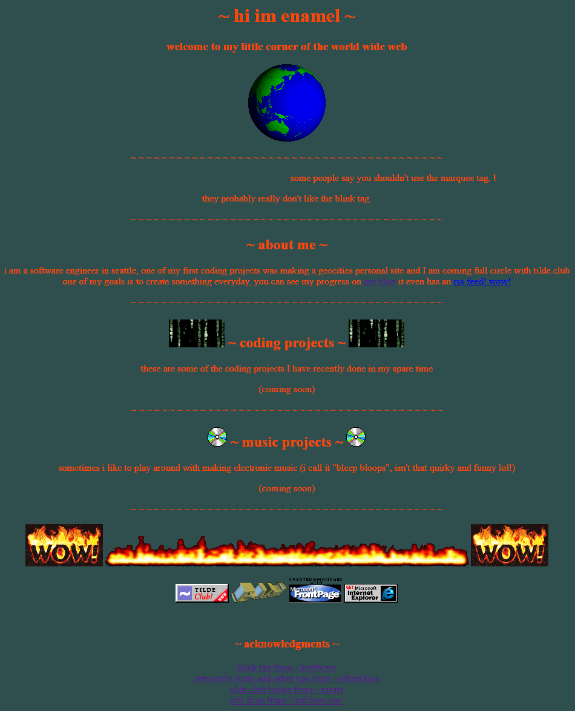

colorful clarity
Started to play around with Hydra, ended up in a jam session
You can play around with the Hydra code here
tags: everydays, bleep-bloops, live-coding, tidal-cycles, hydra
everydays 10
Created a new avatar for posting on stuff and things. It was a long overdue change! It was created in the sprite editor in PICO-8.
streak: 10
everydays 9
Finished the music projects section of my homepage which completes the bulk of what I originally intended to do with my tilde page. I have come up with some new ideas for some new pages, and I will probably continue to tweak it, I have come to hate the color. Which makes sense as I tried to pick a really awful color scheme for it.
I feel like I am starting to get into a groove with everydays, I am now trying to get them wrapped up by midnight to make sure I don't spend too much time working into the wee hours of the morning. We will see how my motivation goes as things get a little more free form and I don't have a set list of items I am trying to tick off.
I want to dive back into live coding with Tidal Cycles, and I may try to push an update to UNCLE. Not really sure what comes next maybe more HTML hacking!
streak: 9
tags: everydays, homepage-update
bop it
A little jam session in tidal cycles using bop it samples
tags: bleep-bloops, tidal-cycles, live-coding
everydays 8
Planned on filling out the music section of my homepage, but some of the stuff I did on twitch didn't want to embed. Ended up being a bit of a time sink. I figured it out, but by then I was aleady invested and moving it to youtube to host.
So a fair amount of time invested all I have have to show for it is a blog post
streak 8
tags: everydays
algorhythms
"Live coding" in the general sense is creating art using code, usually on the fly in an improvisational way.
I have been playing around with music production using a patterning language Tidal Cycles, where you can create patterns and sequences of samples and synths among other things.
Here are a few of my explorations using it
tags: bleep-bloops, tidal-cycles, live-coding
everydays 7
Updated the homepage to include a table of some of my personal coding projects as well as some CSS to at least de-jank it a little bit. It grew so much with hashtag content! Here is what it looks like now:

streak: 7
tags: everydays, homepage-update
everydays 6
Nearly skipped today, just was not feeling it. Like yesterday I wanted to do something quick, but ended up getting into it and fiddling for an hour. Sensing a pattern.
I downloaded some period correct gifs to make my homepage really pop. I am nearly 100% sure I found the same CD gif I had on my geocities page in the 90s. Anyway, now my homepage looks like this:

streak: 6
tags: everydays, homepage-update
everydays 5
Tried to find something quick to update, still ended up spending an hour fiddling with the CSS on this blog. I largely followed (aped) the design guidelines at google's material dark theme.
I also reformatted the main css file, and when doing so realized I was un-minifying it and making the file size larger for my own feelings of vanity. Going to look into a script to take my pretty format and minify it to reduce the file size. If you are going for small static HTML, might as well go all the way right?
streak: 5
tags: everydays, homepage-update
everydays 4
worked on my index.html, created a .css file and learned how to upload an image via scp
today my homepage looks like this:

current streak: 4
tags: everydays, homepage-update